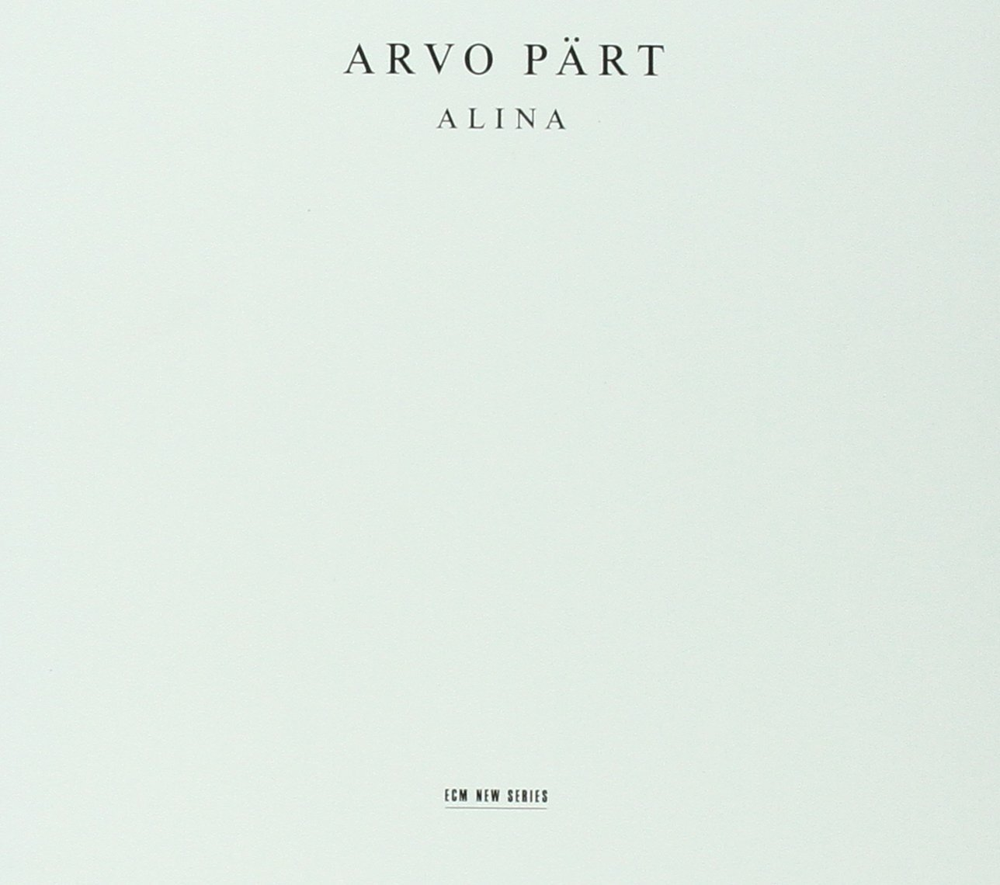

ARVO PÄRT
“I could compare my music to white light which contains all colours. Only a prism can divide the colours and make them appear; this prism could be the spirit of the listener.”

Spiegel im Spiegel, 10:36
Vladimir Spivakov, violin
Sergej Bezrodny, piano
Für Alina, 10:47
Alexander Malter, piano
Spiegel im Spiegel, 9:12
Dietmar Schwalke, violoncello
Alexander Malter, piano
Für Alina, 10:53
Alexander Malter, piano
Spiegel im Spiegel, 9:48
Vladimir Spivakov, violin
Sergej Bezrodny, piano
Reviews